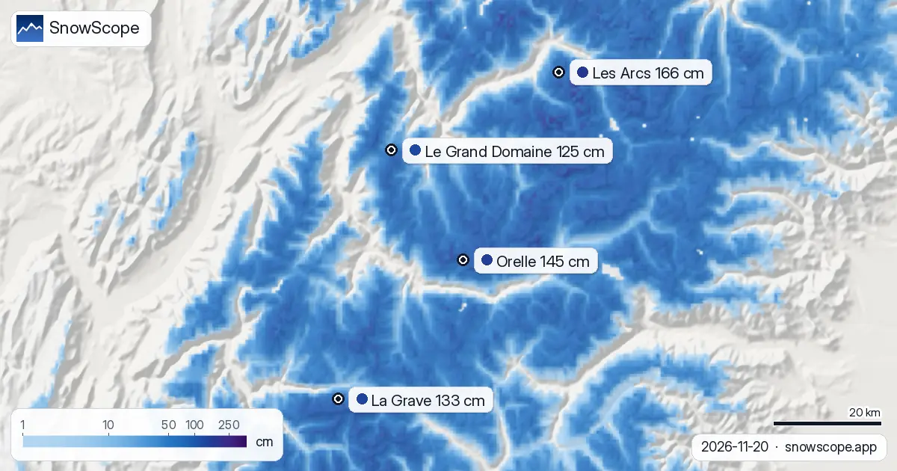

Schneehöhen Alpen: Orelle, Les Arcs und Le Grand Domaine
Dieses Wochenende bringt sowohl Tiefgang als auch Neuschnee in die nördlichen Alpen. Les Arcs führt die Gruppe mit 166 cm in den oberen Höhenlagen an, gefolgt von Orelle mit 145 cm und Le Grand Domaine mit 125 cm. Bis Sonntagabend prognostiziert die Vorhersage je nach Ort weitere 77 bis 107 cm Neuschnee.
Die Live-Schneeprognose für Orelle in der SnowScope-AppSchneehöhen, Pulverschnee-Alarme und 3D-Karte, gratis.
Welches Skigebiet, welche Höhe
Les Arcs hat derzeit die meiste Schneedecke: 166 cm oben (3.205 m), aber nur 4 cm an der Talstation (1.222 m). Der Unterschied ist wichtig, denn früh in der Saison ist der Schnee in niedriger Höhe dünn und dünne Stellen verbergen Felsen. Orelle zeigt 145 cm oben (3.221 m) und 36 cm an der Talstation (2.338 m). Le Grand Domaine ist insgesamt niedriger und hat 125 cm oben (2.516 m) und nur 8 cm an der Talstation (1.219 m).
Halte dich an die oberen Pisten und bleibe auf präparierten Abfahrten. Die Schneekarte zeigt, wo die beste Schneelage ist; überprüfe auf der Website des Skigebiets, welche Lifte fahren.
| Skigebiet | Schneehöhe | Neuschnee, 72 h | Erwartet, nächste Tage | Gipfel |
|---|---|---|---|---|
| Orelle | 145 cm | 143 cm | 92 cm | 3.221 m |
| Les Arcs | 166 cm | 134 cm | 77 cm | 3.205 m |
| Le Grand Domaine | 125 cm | 129 cm | 107 cm | 2.516 m |
| La Grave | 133 cm | 122 cm | 108 cm | 3.543 m |

Schneefall in den nächsten drei Tagen
Samstag bringt wenig: etwa 7 bis 8 cm überall. Sonntag ist das Hauptereignis. Orelle bekommt 65 cm, Les Arcs erhält 52 cm und Le Grand Domaine nimmt 71 cm auf. Montag kommt noch einmal 20 bis 29 cm dazu.
Summen bis Montagabend: Orelle legt 92 cm zu, Les Arcs 77 cm, Le Grand Domaine 107 cm. Dieser Neuschnee wird dein bestes Skivergnügen—weich, verzeihend und schonend für die Felsen, die unter der dünnen Grundschicht verborgen sind.

Nassschneerisiko und beste Fahrtzeiten
Samstag steigt die Schneefallgrenze bei Les Arcs auf 2.000–2.740 m und bei Le Grand Domaine auf 1.920–2.860 m. Das bedeutet, die unteren Pisten könnten am Nachmittag matschig werden. Bei Orelle liegt der Bereich bei 2.360–2.600 m, die Talstation auf 2.338 m liegt also direkt an der Grenze.
Sonntag wird kälter: Bei Orelle sinkt die Schneefallgrenze auf 2.100–2.780 m; bei Les Arcs fällt sie auf 1.350–1.760 m. Das sichert Winterschnee auf deinen oberen Abfahrten. Fahre Samstag früh und bleibe in den höheren Bereichen; die Bedingungen am Sonntag sind tagsüber stabiler.
Schneetiefe in den vergangenen Wintern
Bei mittlerer Höhe (2.779 m) liegt Orelle derzeit tiefer als in 17 der vergangenen 46 November an diesem Datum. Die Schneehöhe auf mittlerer Höhe heute ist etwa 61 cm; der typische Mitte-November-Wert liegt bei 64 cm. Diese Saison liegt also in etwa im Rahmen, nicht davor.
Les Arcs auf mittlerer Höhe (2.213 m) hat 38 cm, tiefer als in 28 der vergangenen 46 November—ein starker Start für die Frühjahrsaison. Le Grand Domaine in derselben Höhe (1.867 m) hat 31 cm, tiefer als 27 vergangene November. Beide liegen über ihrem normalen Anfang-November-Wert.
Auswahl zwischen den drei Gebieten
Les Arcs hat derzeit die meiste Schneemenge und wird den Schnee nach dem Neuschneefall am Sonntag auf allen Höhen besser halten. Orelle ist auch stark und insgesamt etwas höher. Le Grand Domaine wird bis zum Wochenende das meiste Schneegewicht bekommen, startet aber niedriger und kann auf südausgerichteten Hängen schneller abbauen.
Wähle Les Arcs oder Orelle für die sicherste Schneeausdauer. Beide haben gutes nordausgerichtetes Gelände und hohe Elevationen. Kleine Menschenmengen finden oft dieselbe Schneelage ein paar Minuten entfernt vom Anführer; die App zeigt das ganze Bild.
Bevor du fährst
Überprüfe die Website jedes Skigebiets auf Liftöffnungen und Schließungen. Der Betrieb in der Frühjahrsaison variiert von Woche zu Woche. Bestätige die Vorhersage noch einmal Freitag Abend; Kurzfristprognosen verschieben sich.
Vor jedem Skifahren abseits der Pisten oder Touren liest du das offizielle Lawinenlagebericht für dein Gebiet. Nordausgerichtete Hänge und schattige Rinnen halten den Schnee am längsten und sind oft sicherer. Vermeide südausgerichtete Abfahrten in der warmen Tageszeit, besonders Samstag.
Tipps für Skifahrer
- Fahre hoch: Les Arcs und Orelle haben beide Gelände über 3.200 m, wo Neuschnee über das Wochenende kalt und spielbar bleibt.
- Samstag Nachmittag: rechne mit Matsch auf Pisten unter 2.400 m. Starte früh oder bleibe auf nordausgerichteten Hängen und im Schatten.
- Sonntag Morgen an aufwärts: Schneefallgrenzen sinken, daher verbessern sich die unteren Pisten und werden sicherer. Die Bedingungen stabilisieren sich.
- Felsen verstecken sich unter dünner Grundschicht-Schneedecke bei allen drei Skigebieten. Bleibe auf offenen Pisten, bis der Neuschnee am Sonntag kommt.
- Die Schneetiefe in der Frühjahrsaison fällt steil mit Höhenverlust. Bei Les Arcs hat die Talstation fast keinen Schnee; plane nicht, Samstag von oben hinunterzufahren.
Zu diesen Zahlen
Die Schneehöhen der Skigebiete sind der meiste Schnee in den oberen Hängen am angegebenen Tag; es sind Schätzungen für eine Fläche, keine Messung an einem Punkt. Prognosen können sich ändern. Lies vor dem Freeriden immer den offiziellen Lawinenlagebericht.
Offizielle Lawinenlageberichte: EAWS (Alps)
Diesen Bericht zitieren
Für Forschung, Lehre oder Presse: Zahlen und Grafiken sind unter CC BY 4.0 mit dieser Quellenangabe frei nutzbar.
SnowScope (2026), Schneehöhen Alpen: Orelle, Les Arcs und Le Grand Domaine, https://snowscope.app/blog/de/2026/11/alps-where-to-ski-this-weekend-20-november-2026.html, abgerufen am 2026-11-20
SnowScope (Atlas Labs). (2026, November 20). Schneehöhen Alpen: Orelle, Les Arcs und Le Grand Domaine. SnowScope snow reports. https://snowscope.app/blog/de/2026/11/alps-where-to-ski-this-weekend-20-november-2026.html
BibTeX
@misc{snowscope2026alpswheretoskithisweeken,
author = {{SnowScope (Atlas Labs)}},
title = {Schneehöhen Alpen: Orelle, Les Arcs und Le Grand Domaine},
year = {2026},
month = nov,
howpublished = {\url{https://snowscope.app/blog/de/2026/11/alps-where-to-ski-this-weekend-20-november-2026.html}},
note = {Published 2026-11-21 10:57 UTC; accessed 2026-11-20}
}· CC BY 4.0 · Methoden, Daten und Werkzeuge →
Orelle: Schnee und Temperatur nach Höhe, dieser Winter vs letzter (Werkzeuge) →
Orelle folgen
Gratis: eine Nachricht, wenn Neuschnee kommt, und jeden Morgen die Vorhersage.